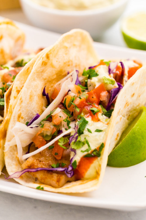

| Tacos | Description | Image | Qty | Price |
|---|---|---|---|---|
| Classic Beef Taco | Seasoned ground beef, lettuce, cheese, tomato, and salsa in a corn tortilla. | 1 | 500Ksh | |
| Grilled Chicken Taco | Grilled chicken, avocado, onion, cilantro, and lime in a flour tortilla. |  |
1 | 650Ksh |
| Vegetarian Taco | Black beans, roasted vegetables, guacamole, and sour cream in a whole wheat tortilla. | 1 | 400Ksh | |
| Fish Taco | Battered fish, cabbage slaw, chipotle mayo, and pico de gallo in a soft corn tortilla. |  | 1 | 750Ksh |
| Shrimp Taco | Grilled shrimp, pineapple salsa, shredded lettuce, and avocado crema in a flour tortilla. | 1 | 900Ksh |